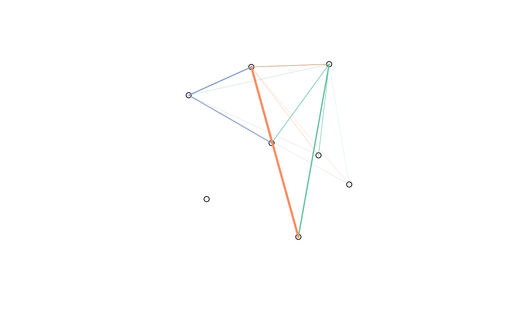

Origin-destination ('OD') flow data is often provided in the form of 1 line per flow with zone codes of origin and destination centroids. This can be tricky to plot and link-up with geographical data. This function makes the task easier.
od2line( flow, zones, destinations = NULL, zone_code = names(zones)[1], origin_code = names(flow)[1], dest_code = names(flow)[2], zone_code_d = NA, silent = FALSE ) od2line2(flow, zones)
Arguments
| flow | A data frame representing origin-destination data.
The first two columns of this data frame should correspond
to the first column of the data in the zones. Thus in |
|---|---|
| zones | A spatial object representing origins (and destinations if no separate destinations object is provided) of travel. |
| destinations | A spatial object representing destinations of travel flows. |
| zone_code | Name of the variable in |
| origin_code | Name of the variable in |
| dest_code | Name of the variable in |
| zone_code_d | Name of the variable in |
| silent | TRUE by default, setting it to TRUE will show you the matching columns |
Details
Origin-destination (OD) data is often provided
in the form of 1 line per OD pair, with zone codes of the trip origin in the first
column and the zone codes of the destination in the second column
(see the vignette("stplanr-od")) for details.
od2line() creates a spatial (linestring) object representing movement from the origin
to the destination for each OD pair.
It takes data frame containing
origin and destination cones (flow) that match the first column in a
a spatial (polygon or point) object (zones).
See also
Other od:
dist_google(),
od2odf(),
od_aggregate_from(),
od_aggregate_to(),
od_coords2line(),
od_coords(),
od_dist(),
od_id,
od_oneway(),
od_to_odmatrix(),
odmatrix_to_od(),
points2flow(),
points2odf()
Examples
od_data <- stplanr::flow[1:20, ] l <- od2line(flow = od_data, zones = cents_sf) plot(sf::st_geometry(cents_sf))#> Warning: ignoring all but the first attributel <- od2line(flow = od_data, zones = cents)#> Warning: CRS object has comment, which is lost in output#> Warning: Discarded datum Unknown based on WGS84 ellipsoid in CRS definition#> class : SpatialPointsDataFrame #> features : 6 #> extent : -1.540901, -1.492713, 53.80131, 53.81724 (xmin, xmax, ymin, ymax) #> crs : +proj=longlat +ellps=WGS84 +towgs84=0,0,0,0,0,0,0 +no_defs #> variables : 5 #> names : WZ11CD, LAD11CD, COWZEW_SG, COWZEW_SGN, COWZEW_G #> min values : E33010351, E08000035, 2, Manufacturing and distribution, 2c #> max values : E33012352, E08000035, 7, Top jobs, 7cod_data2 <- flow_dests[1:12, 1:3] od_data2#> Area.of.residence WZ11CD All #> 920573 E02002361 E33010350 109 #> 920575 E02002361 E33010390 38 #> 920578 E02002361 E33010468 10 #> 920582 E02002361 E33012367 44 #> 920587 E02002361 E33012225 34 #> 920591 E02002361 E33012368 7 #> 920601 E02002361 E33012333 94 #> 921220 E02002363 E33012414 30 #> 921222 E02002363 E33012313 183 #> 921225 E02002363 E33010464 11 #> 921228 E02002363 E33012254 72 #> 921233 E02002363 E33012352 13flowlines_dests <- od2line(od_data2, cents_sf, destinations = destinations_sf) flowlines_dests#> Simple feature collection with 12 features and 3 fields #> geometry type: LINESTRING #> dimension: XY #> bbox: xmin: -1.563202 ymin: 53.79647 xmax: -1.492713 ymax: 53.83587 #> geographic CRS: WGS 84 #> First 10 features: #> Area.of.residence WZ11CD All geometry #> 1 E02002361 E33010350 109 LINESTRING (-1.516734 53.82... #> 2 E02002361 E33010390 38 LINESTRING (-1.516734 53.82... #> 3 E02002361 E33010468 10 LINESTRING (-1.516734 53.82... #> 4 E02002361 E33012367 44 LINESTRING (-1.516734 53.82... #> 5 E02002361 E33012225 34 LINESTRING (-1.516734 53.82... #> 6 E02002361 E33012368 7 LINESTRING (-1.516734 53.82... #> 7 E02002361 E33012333 94 LINESTRING (-1.516734 53.82... #> 8 E02002363 E33012414 30 LINESTRING (-1.535617 53.82... #> 9 E02002363 E33012313 183 LINESTRING (-1.535617 53.82... #> 10 E02002363 E33010464 11 LINESTRING (-1.535617 53.82...